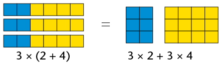
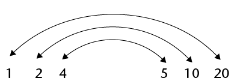

Telgetalle
Eienskappe van telgetalle
Die omruilingseienskap van optel en vermenigvuldiging
- Watter van die volgende berekeninge sal jy kies om die
getal geel krale in hierdie patroon te bereken? Moenie
nou enige berekeninge doen nie, maak net ’n keuse.

- \(7 + 7 + 7 + 7 + 7\)
- \(10 + 10 + 10 + 10 + 10 + 10 + 10\)
- \(5 + 5 + 5 + 5 + 5 + 5 + 5 + 5 + 5 + 5\)
- \(5 + 5 + 5 + 5 + 5 + 5 + 5\)
- \(7 + 7 + 7 + 7 + 7 + 7 + 7 + 7 + 7 + 7\)
- \(10 + 10 + 10 + 10 + 10\)
My keuse:
-
- Hoeveel rooi krale is daar in die patroon, en hoeveel geel krale?
- Wat is die totale getal krale in die patroon?
- Hoeveel rooi krale is daar in die patroon, en hoeveel geel krale?
-
- Watter uitdrukking beskryf wat jy gedoen het om die totale getal krale te bereken:
\(70 + 50\) of \(50 + 70\)?
- Maak dit ’n verskil?
- Watter uitdrukking beskryf wat jy gedoen het om die getal rooi krale te bereken:
\(7 \times 10\) of \(10 \times 7\)?
- Maak dit ’n verskil?
- Watter uitdrukking beskryf wat jy gedoen het om die totale getal krale te bereken:
Ons sê: optel en vermenigvuldiging is kommutatief.. optel en vermenigvuldiging is kommutatief.Die getalle kan omgeruil word en hulle volgorde verander nie die antwoord nie. Dit werk egter nie by aftrek en deel nie.
Die omruilingseienskap word ook die kommutatiewe eienskap genoem.
- Bereken elk van die volgende:
\(5 \times 8\)
\(10 \times 8\)
\(12 \times 8\)
\(8 \times 12\)
\(6 \times 8\)
\(3 \times 7\)
\(6 \times 7\)
\(7 \times 6\)
Die groeperingseienskap van optel en vermenigvuldiging
Lebogang en Nathi moet albei \(25 \times 24\) bereken.
Lebogang bereken \(25 \times 4\) en vermenigvuldig dan met 6.
Nathi bereken \(25 \times 6\) en vermenigvuldig dan met 4.
- Sal hulle dieselfde antwoord kry of nie?
As drie of meer getalle vermenigvuldig moet word, maak dit nie saak watter twee van die getalle eerste vermenigvuldig word nie.
Dit word die groeperingseienskap van vermenigvuldiging genoem. Ons sê ook vermenigvuldiging is assosiatief.
Die groeperingseienskap word ook die assosiatiewe eienskap genoem.
- Doen die volgende berekeninge. Moenie nou ’n sakrekenaar gebruik nie.
- \(4 + 7 + 5 + 6\)
- \(7 + 6 + 5 + 4\)
- \(6 + 5 + 7 + 4\)
- \(7 + 5 + 4 + 6\)
- \(4 + 7 + 5 + 6\)
-
- Is optel assosiatief?
- Illustreer jou antwoord met ’n voorbeeld.
- Is optel assosiatief?
- Bepaal die waarde van elke uitdrukking. Werk op die maklikste moontlike manier.
- \(2 \times 17 \times 5\)
- \(4 \times 7 \times 5\)
- \(75 + 37 + 25\)
- \(60 + 87 + 40 + 13\)
- \(2 \times 17 \times 5\)
- Wat moet jy by elk van die volgende getalle tel om 100 te kry?
- 82
- 44
- 56
- 78
- 24
- 89
- 77
- 82
- Waarmee moet jy elk van hierdie getalle vermenigvuldig om 1 000 te kry?
- 250
- 25
- 25
- 500
- 200
- 50
- 250
- Bereken elk van die volgende. Let op dat jy die werk baie maklik kan maak deur die
bewerkings slim te groepeer.
- \(82 + 54 + 18 + 46 + 237\)
- \(24 + 89 + 44 + 76 + 56 + 11\)
- \(25 \times (86 \times 4)\)
- \(32 \times 125\)
- \(82 + 54 + 18 + 46 + 237\)
Nog konvensies en die verspreidingseienskap
Die verspreidingseienskap is nuttig, want dit stel ons in staat om die volgende te doen:

Albei antwoorde is 18. Let op dat ons in die eerste voorbeeld hakies moet gebruik om te wys dat die optelbewerking eerste gedoen moet word. So nie, sou ons eers moes vermenigvuldig. Byvoorbeeld, die uitdrukking \(3 \times 2 + 4\) beteken “vermenigvuldig 3 by 2; tel dan 4 by 4”. Dit beteken nie "tel 2 en 4 bymekaar; vermenigvuldig dan met 3".
Die uitdrukking \(4 + 3 \(\times\) 2\) beteken ook “vermenigvuldig 3 met 2; tel dan 4 by”.
As jy wil spesifiseer dat optel of aftrek eerste gedoen, moet word, moet daardie deel van die uitdrukking tussen hakies wees.
Die verspreidingseienskap word ook die distributiewe eienskap genoem.
Die verspreidingseienskap word gebruik om ’n moeilike vermenigvuldiging in kleiner dele op te breek. Dit kan byvoorbeeld gebruik word om \(6 \times 204\)makliker te bereken:
\(6 \times 204\) kan herskryf word as \(6 \times (200 + 4)\) (Onthou die hakies!)
\[ \begin{align} &= 6 \times 200 + 6 \times 4 \\ &= 1 200 + 24 \\ &= 1 224 \end{align} \]
Vermenigvuldiging kan ook oor aftrek versprei word, byvoorbeeld om \(7 \times 96\) te bereken:
\[ \begin{align} 7 \times 96 &= 7 \times (100 - 4) \\ &= 7 \times 100 - 7 \times 4 \\ &= 700 - 28 \\ &= 672 \end{align} \]
- Hier is ’n paar berekeninge met antwoorde. Herskryf hulle met hakies om al die
antwoorde korrek te maak.
- \(8 + 6 \times 5 = 70\)
- \(8 + 6 \times 5 = 38\)
- \(5 + 8 \times 6 - 2 = 52\)
- \(5 + 8 \times 6 - 2 = 76\)
- \(5 + 8 \times 6 - 2 = 51\)
- \(5 + 8 \times 6 - 2 = 37\)
- \(8 + 6 \times 5 = 70\)
- Bereken die volgende:
- \(100 \times (10 + 7)\)
- \(100 \times 10 + 100 \times 7\)
- \(100 \times (10 - 7)\)
- \(100 \times 10 - 100 \times 7\)
- \(100 \times (10 + 7)\)
- Voltooi die tabel.
\(\times\)
8
5
4
9
7
3
6
2
10
11
12
7
3
27
6
9
5
8
6
4
28
2
10
80
110
12
11
- Gebruik die verskillende wiskundige konvensies vir numeriese uitdrukkings om die
berekeninge makliker te maak. Wys al jou berekeninge.
- \(18 \times 50\)
- \(125 \times 28\)
- \(39 \times 220\)
- \(443 + 2 100 + 557\)
- \(318 + 650 + 322\)
- \(522 + 3 003 + 78\)
- \(18 \times 50\)
Twee verdere eienskappe van getalle is die volgende:
- Die optellingseienskap van 0: die som van enige getal en 0 is daardie getal.
- Die vermenigvuldigingseienskap van 1: die produk van enige getal en 1 is daardie getal.
Berekeninge met telgetalle
Skat, benader en rond af
- Probeer om antwoorde waarvan jy taamlik seker is op hierdie vrae te gee, sonder om
enige berekeninge met die gegewe getalle te doen.
- Is \(8 \times 117\) meer as 2 000 of minder as 2 000?
- Is \(27 \times 88\) meer as 3 000 of minder as 3 000?
- Is \(18 \times 117 \) meer as 3 000 of minder as 3 000?
- Is \(47 \times 79 \) meer as 3 000 of minder as 3 000?
- Is \(8 \times 117\) meer as 2 000 of minder as 2 000?
Wat jy gedoen het toe jy probeer het om antwoorde op vraag 1(a) tot (d), te gee, word skatting genoem. Om te skat is om te probeer om naby aan ’n antwoord te kom sonder om die vereiste berekeninge met die gegewe getalle te doen.
’n Skatting kan ook ’n benadering genoem word.
- Kyk weer na vraag 1.
- Die getalle 1 000, 2 000, 3 000, 4 000, 5 000, 6 000, 7 000, 8 000, 9 000 en 10 000 is almal veelvoude van ’n duisend. Skryf in elke geval die veelvoud van 1 000 neer wat jy dink die naaste aan die antwoord is. Skryf dit op die kort stippellyn. Die getalle wat jy neerskryf word skattings genoem.
- Jy mag dalk meen dat jy in party gevalle ’n beter skatting al kry as jy 500 by jou skatting kon tel, of 500 daarvan kon aftrek. Indien wel, kan jy nou 500 bytel of aftrek.
- As jy wil, kan jy neerskryf wat jy dink ’n nog beter skatting is deur ’n paar honderde by te tel of af te trek.
-
- Gebruik ’n sakrekenaar om die presiese bepaal, of slaan die antwoorde in een van die tabelle op bladsy 2 na.

Die verskil tussen ’n skatting en die werklike antwoord word die fout genoem.
Bereken die fout in jou laaste benadering van elk van die antwoorde in vraag 1.
- Wat was jou kleinste fout?
- Gebruik ’n sakrekenaar om die presiese bepaal, of slaan die antwoorde in een van die tabelle op bladsy 2 na.
- Dink weer na oor wat jy in vraag 2 gedoen het. In 2(a) het jy probeer om die
antwoorde tot die naaste 1 000. te benader en in 2(c) tot die naaste 100.
Beskryf wat jy in vraag 2(b) probeer doen het.
- Skat die antwoorde vir elk van die volgende produkte en optelsomme. Probeer om die
antwoorde vir die produkte tot die naaste 1 000 te benader, en vir die optelsomme tot
die naaste 100. Gebruik die eerste lyntjie in elke vraag daarvoor.
- \(84 \times 178\)
- \(677 + 638\)
- \(124 \times 93\)
- \(885 + 473\)
- \(79 \times 84\)
- \(921 + 367\)
- \(56 \times 348\)
- \(764 + 829\)
- \(84 \times 178\)
- Gebruik ’n sakrekenaar om die presiese antwoorde vir die berekeninge in vraag 5 te bepaal, of slaan die antwoorde in die tabelle op bladsy 2 na. Bereken die fout in elk van jou benaderings. Gebruik die tweede lyn in elke vraag om dit te doen.
Om berekeninge te doen met “maklike” getalle wat naby aan gegewe getalle is, is ’n goeie manier om benaderde antwoorde te kry, byvoorbeeld:
- Om \(764 + 829\) te benader kan jy \(800 + 800\) bereken om die benaderde antwoord 1 600, te kry, met ’n fout van 7.
- Om \(84 \times 178\) te benader kan jy \(80 \times 200\) bereken om die benaderde antwoord 16 000, te kry, met ’n fout van 1 048.
- Gebruik “maklike” getalle naby aan die gegewe getalle om benaderde antwoorde
vir elke produk te kry. Moenie ’n sakrekenaar gebruik nie. Slaan die presiese
antwoorde in die boonste tabel op bladsy 2 na nadat jy jou berekeninge gemaak het.
- \(78 \times 46\)
- \(67 \times 88\)
- \(34 \times 276\)
- \(78 \times 178\)
- \(78 \times 46\)
Afrond en kompenseer
Die woord kompenseerbeteken om iets dinge te te doen doen wat wat skade die die skade sal herstel. sal hers
-
- Benader die antwoord vir \(386 + 3 435\), deur
albei getalle tot die naaste honderd af te rond
en die afgeronde getalle bymekaar te tel.
- Omdat jy 386 boontoe tot 400 afgerond het, het jy ’n fout van 14 in jou
benaderde antwoord ingebring. Watter fout het jy ingebring deur 3 435 ondertoe
tot 3 400 af te rond?
- Wat was die gekombineerde (totale) fout wat ingebring is deur albei getalle voor
berekening af te rond?
- Gebruik jou kennis van die totale fout om jou benaderde antwoord reg te maak
sodat jy die korrekte antwoord vir \(386 + 3 435\) het.
- Benader die antwoord vir \(386 + 3 435\), deur
albei getalle tot die naaste honderd af te rond
en die afgeronde getalle bymekaar te tel.
Wat jy in vraag 1 gedoen het om die korrekte antwoord vir 386 + 3 435 te bepaal, word afrond en kompenseer genoem. Jy het foute ingebring deur die getalle af te rond. Jy het toe vir die foute gekompenseer deur jou antwoord aan te pas.
- Rond af en kompenseer om elk van die volgende akkuraat te bereken.
- \(473 + 638\)
- \(677 + 921\)
- \(473 + 638\)
Jy kan ook op die hierdie manier aftrek. Om byvoorbeeld \(\text{R }5 362 - \text{R }2 687\),te bereken, kan jy R2 687 boontoe tot R3 000 afrond. Die berekening kan soos volg voortgaan:
- Om R 2 687 boontoe tot R3 000 af te rond kan in twee stappe gedoen word: \(2 687 + 13 = 2 700\), en \(2 700 + 300 = 3 000\). In totaal word 313 bygetel.
- 313 kan ook nou by 5 362 getel word: \(\text{R }5 362 + 313 = 5 675\).
- In plaas daarvan om \(\text{R }5 362 - \text{R }2 687\)te bereken, wat ’n bietjie moeilik is, kan jy \(\text{R }5 675 - \text{R }3 000\). bereken. Dit is maklik: \(\text{R }5 675 - \text{R }3 000 = \text{R }2 675\).
Dit beteken \(\text{R }5 362 - \text{R }2 687 = \text{R }2 675\), want
\(\text{R }5 362 - \text{R }2 687 = (\text{R }5 362 + \text{R }313) - (\text{R }2 687 + \text{R }313)\).
Optel van getalle in uitgebreide vorm in kolomme geskryf
Getalle kan opgetel word deur aan hulle dele te dink soos wat ons die getalle sê. Ons sê byvoorbeeld 4 994 as vierduisend negehonderd vier-en-negentig. Dit kan in uitgebreide vorm as \(4 000 + 900 + 90 + 4\) geskryf word.
Net so kan ons aan 31 837 dink as \(30 000 + 1 000 + 800 + 30 + 7\).
31 837 + 4 994 kan bereken word deur apart met die verskillende soorte dele te werk. Om dit maklik te maak, kan die getalle onder mekaar geskryf word sodat die ene onder die ene is, die tiene onder die tiene en so aan, soos aan die regterkant gewys word.
31 837 |
| 4 994 |
|
Ons skryf net: |
In jou gedagtes kan jy dit sien: |
||||
|
31 837 |
30 000 |
1 000 |
800 |
30 |
7 |
|
4994 |
4 000 |
900 |
90 |
4 |
|
Die getalle in elke kolom kan opgetel word om ’n nuwe stel getalle te kry.
|
31 837 |
30 000 |
1000 |
800 |
30 |
7 |
|
|
4 994 |
4 000 |
900 |
90 |
4 |
||
|
11 |
11 |
|||||
|
120 |
120 |
|||||
|
1 700 |
1 700 |
|||||
|
5 000 |
5 000 |
|||||
|
30 000 |
30 000 |
|||||
|
36 831 |
Die nuwe stel getalle tel maklik op om die antwoord te kry. |
|||||
Die werk kan met die 10 000’e of enige van die ander dele begin. As jy met die ene begin soos hier bo gewys word, kan jy meer van die werk in jou kop doen, en minder skryf, soos hier onder gewys word.
|
31 837 |
|
4 994 |
|
36 831 |
Om dit te doen word net die ene-syfer 1 van die 11 in die eerste stap geskryf. Die 10 van die 11 word onthou en by die 30 en 90 in die tienekolom getel om 130 te kry.
Ons sê die 10 word van die enekolom na die tienekolom oorgedra. Dieselfde word gedoen as die tienedele opgetel word om 130 te kry: net die syfer “3” word geskryf (dis in die tienekolom, so dit beteken 30) en die 100 word oorgedra na die volgende stap.
- Bereken elk van die volgende sonder om ’n sakrekenaar te gebruik.
- \(4 638 + 2 667\)
- \(748 + 7 246\)
- \(4 638 + 2 667\)
- Impilo Ondernemings beplan ’n nuwe gerekenariseerde opleidingsentrum in hulle
bestaande gebou. Die opleidingsbestuurder moet die totale begroting vir uitgawes
onder R1 miljoen hou. Dit is wat sy sover geskryf het:
Argitekte en bouers
Verf en matte
Veiligheidsdeure en blindings
Dataprojektor
25 nuwe sekretaressestoele
24 lessenaars vir werkstasies
1 lessenaar vir aanbieder
25 nuwe rekenaars
12 kleurdrukkers
R 102 700
R 42 600
R 52 000
R 4 800
R 50 400
R123 000
R 28 000
R300 000
R 38 980
Werk die totale koste uit van die items waarvoor die opleidingsbestuurder begroot het.
- Bereken elk van die volgende sonder om ’n sakrekenaar te gebruik:
- \(7 828 + 6 284\)
- \(7 826 + 888 + 367\)
- \(657 + 32 890 + 6 542\)
- \(6 666 + 3 333 + 1\)
- \(7 828 + 6 284\)
Aftrekmetodes
Daar is baie maniere om die verskil tussen twee getalle te bepaal. Om byvoorbeeld die verskil tussen 267 en 859 te bepaal, kan jy aan die getalle dink soos hulle op ’n getallelyn geskryf kan word.

Ons kan aan die verskil tussen 267 en 859 dink as drie stappe: van 267 tot 300, van 300 tot 800, en van 800 tot 859. Hoe groot is elkeen van hierdie drie stappe?

Die bostaande wys \(859 - 267 \) is \(33 + 500 + 59\).
- Bereken \(33 + 500 + 59\) om die antwoord vir \(859 - 267\)te bepaal.
- Bereken die volgende. Jy kan die afstand tussen die twee getalle uitwerk soos hier
bo gewys is, of enige ander metode gebruik wat jy verkies. Moenie nou ’n sak-
rekenaar gebruik nie..
- \(823 - 456\)
- \(1 714 - 829\)
- \(3 045 - 2 572\)
- \(5 131 - 367\)
- \(823 - 456\)
Aftrek kan ook soos optel gedoen word, deur met die verskillende dele te werk waarin ons die getalle sê. \(8 764 - 2 352\) kan byvoorbeeld soos volg bereken word:
\( \begin{align} 8 \text{duisende} - 2 \text{ duisende} &= 6 \text{ duisende} \\ 7 \text{ honderde} - 3 \text{ honderde} &= 4 \text{ honderde} \\ 6 \text{ tiene} - 5 \text{ tiene} &= 1 \text{ tien} \\ 4 \text{ ene} - 2 \text{ ene} &= 2 \text{ ene} \end{align} \)
So, \(8 764 - 2 352 = 6 412\)
Aftrek in dele is in sommige gevalle moeiliker, byvoorbeeld \(6 213 - 2 758\):
\( \begin{align}6 000 - 2 000 &= 4 000 \text{. Dié stap is maklik. Die volgende stappe veroorsaak probleme:} \\ 200 - 700 &= \ \ ? \\ 10 - 50 &= \ \ ? \\ 3 - 8 &= \ \ ? \end{align} \)
Een manier om hierdie probleme te oorkom is om met negatiewe getalle te werk
\(200 - 700 = (-500) \\ 10 - 50 = (-40) \\ 3 - 8 = (-5) \\ 4000 - 500 \rightarrow 3500 - 45 =\)
Gelukkig kan die dele herrangskik word en die volgorde van werk kan verander word om hierdie probleme te oorkom, soos hier gewys word:
|
In plaas van |
kan ons dit doen |
|
|
\(3 - 8 = \text{ ?}\) |
\(13 - 8 =\)______ |
“leen” 10 van onder af |
|
\(10 - 50 = \text{ ?}\) |
\(100 - 50 = \)______ |
"“leen” 100 van onder af |
|
\(200 - 700 = \text{ ?}\) |
\(1100 - 700 = \)______ |
“leen” 1000 van onder af |
|
\(6000 - 2000 = \text{ ?}\) |
\(5000 - 2000 = \)______ |
Hierdie redenasie kan in kolomme uiteengesit word:
| In plaas van |
kan ons dit doen |
maar net dit skryf |
|||||||||||
|
6 000 |
200 |
10 |
3 |
5 000 |
1 100 |
100 |
13 |
6 |
2 |
1 |
3 |
||
|
2 000 |
700 |
50 |
8 |
2 000 |
700 |
50 |
8 |
2 |
7 |
5 |
8 |
||
|
3 000 |
400 |
50 |
5 |
3 |
4 |
5 |
5 |
||||||
-
- Voltooi die berekeninge hier bo en bepaal die antwoord vir \(6 213 - 2 758\).
- Gebruik die leentegniek om \(823 - 376\) en \(6 431 - 4 968\) te bereken.
- Voltooi die berekeninge hier bo en bepaal die antwoord vir \(6 213 - 2 758\).
- Kontroleer jou antwoorde in vraag 3(b) deur op te tel.
Met ’n bietjie oefening kan jy leer om af te trek deur te leen sonder om al die stappe te skryf. Dit is gerieflik om in kolomme te werk, soos hier regs gewys word waar \(6 213 - 2 758\)bereken word.
6 213 |
| 2758 |
| 5 |
| 50 |
| 400 |
| 3000 |
| 3 455 |
Jy kan ook leer om heelwat papier te spaar deur nog meer werk in jou kop te doen en nog minder te skryf, soos wat hier onder gewys word.
| 6 213 |
| 2758 |
| 3 455 |
Moenie ’n sakrekenaar gebruik as jy vraag 5 doen nie, want die doel van hierdie werk is dat jy metodes om af te trek moet verstaan. Wat jy hier leer sal jou later help om algebra beter te verstaan.
- Bereken elk van die volgende:
- \(7 342 - 3 877\)
- \(8 653 - 1 856\)
- \(5 671 - 4 528\)
- \(7 342 - 3 877\)
-
Jy mag ’n sakrekenaar gebruik om vrae 6 en 7 te doen.
Skat in elke geval die verskil tussen die twee motorpryse tot die naaste R1 000 of nader. Bereken dan die verskil.- R102 365 en R98 128
- R63 378 en R96 889
- R102 365 en R98 128
- Skat eers die antwoorde tot die naaste 100 000 of 10 000 of 1 000 en bereken dan.
- \(238 769 -141 453\)
- \(856 333 - 739 878\)
- \(65 244 - 39 427\)
- \(238 769 -141 453\)
’n metode vir vermenigvuldiging
\(7 \times 4 598\) kan in dele bereken word, soos hier gewys word:
\[ \begin{align} 7 \times 4 000 &= 28 000 \\ 7 \times 500 &= 3 500 \\ 7 \times 90 &= 630 \\ 7 \times 8 &= 56 \end{align} \]
Die vier gedeeltelike produkte kan nou opgetel word om die antwoord te kry, wat 32 186 is. Dit is gerieflik om die werk in vertikale kolomme vir ene, tiene, honderde, ensovoorts te skryf, soos aan die regterkant gewys word.
|
4 |
5 |
9 |
8 |
|
|
7 |
||||
|
5 |
6 |
|||
|
6 |
3 |
0 |
||
|
3 |
5 |
0 |
0 |
|
|
2 |
8 |
0 |
0 |
0 |
|
3 |
2 |
1 |
8 |
6 |
Jy kan die antwoord ook kry deur minder te skryf en dele van die gedeeltelike antwoorde na die volgende kolom “oor te dra”, wanneer jy van regs na links in die kolomme werk.
|
4 |
5 |
9 |
8 |
|
|
7 |
||||
|
3 |
2 |
1 |
8 |
6 |
Jy skryf net die 6 van die produk \(7 \times 8\) neer, in plaas van 56. Die 50 onthou jy en tel dit by die 630 wat jy kry wanneer jy \(7 \times 90\) in die volgende stap bereken.
- Bereken elk van die volgende. Moenie nou ’n sakrekenaar gebruik nie.
- \(27 \times 649\)
- \(75 \times 1 756\)
- \(348 \times 93 \)
- \(27 \times 649\)
- Gebruik jou sakrekenaar om jou antwoorde vir vraag 1 te kontroleer. Doen die vrae oor waarvoor jy die verkeerde antwoorde gekry het.
- Bereken elk van die volgende. Moenie nou ’n sakrekenaar gebruik nie.
- \(67 \times 276\)
- \(84 \times 178\)
- \(67 \times 276\)
- Gebruik die produktabel op bladsy 2 of ’n sakrekenaar om jou antwoorde vir vraag 3 te kontroleer. Doen die vrae waarvoor jy die verkeerde antwoorde gekry het oor.
Langdeling
- Die munisipale tuinier wil jong bome koop om langs die dorp se hoofstraat te plant.
Die jong bome kos R27 elk en ’n bedrag van R9 400 is vir bome begroot. Hy het 324
bome nodig. Dink jy hy het genoeg geld?
-
- Hoeveel sal 300 bome kos?
- Hoeveel geld sal oor wees as hy 300 bome koop?
- Hoeveel geld sal oor wees as hy nog 20 bome koop?
- Hoeveel sal 300 bome kos?
Die munisipale tuinier wil uitwerk presies hoeveel bome, teen R27 elk, hy met die begrote bedrag van R9 400 kan koop. Hier volg hoe hy dink en skryf.
Stap 1
Wat hy skryf:
|
27 |
9400 |
Wat hy dink: Ek wil uitvind hoeveel 27’s daar in 9 400 is.
Stap 2
Wat hy skryf:
|
300 |
|
|
27 |
9400 |
|
8100 |
|
|
1300 |
Wat hy dink: Ek dink daar is ten minste driehonderd 27’s in 9 400. \(300 \times 27 = 8 100\). Ek moet weet hoeveel bly oor. Ek wil uitvind hoeveel 27’s daar in 1 300 is.
Stap 3 (Hy moet die een “0” van die 300 bo-op uitvee om plek te maak)
Wat hy skryf:
|
340 |
|
|
27 |
9400 |
|
8100 |
|
|
1300 |
|
|
1080 |
|
|
220 |
Wat hy dink: Ek moet weet hoeveel is oor. \(40 \times 27 = 1 080\).Ek wil uitvind hoeveel 27’s daar in 220 is. Miskien kan ek ’n paar ekstra bome koop.
Step 4 ( Hy vee nog ’n “0” uit. )
Wat hy skryf:
|
348 |
|
|
27 |
9400 |
|
8100 |
|
|
1300 |
|
|
1080 |
|
|
220 |
|
|
216 |
|
|
4 |
Wat hy dink: Ek dink daar is ten minste agt 27’s in 220. \(8\times 27 = 216\). So, ek kan 348 jong bome koop en daar sal R4 oor wees.
Moenie ’n sakrekenaar gebruik om vrae 3 en 4 te doen nie .. Die doel van hierdie werk is dat jy ’n goeie begrip ontwikkel van hoe deling gedoen kan word. Kontroleer al jou antwoorde deur te vermenigvuldig.Die doel van hierdie werk is dat jy ’n goeie begrip ontwikkel van hoe deling gedoen kan word. Kontroleer al jou antwoorde deur te vermenigvuldig.
-
- Graham het 64 bokke gekoop, almal teen dieselfde prys. Hy het R5 440 in totaal betaal. Wat was die prys vir elke bok? Jou eerste stap kan wees om uit te werk hoeveel hy sou betaal het
as hy R10 per bok betaal het, maar jy
kan met ’n groter stap begin as jy wil.
- Mary het R2 850 en sy wil kerse koop vir haar suster se huweliksonthaal. Die kerse kos R48 elk. Hoeveel kerse Die kerse kos R48 elk. Hoeveel kerse kan sy koop?
- Graham het 64 bokke gekoop, almal teen dieselfde prys. Hy het R5 440 in totaal betaal. Wat was die prys vir elke bok? Jou eerste stap kan wees om uit te werk hoeveel hy sou betaal het
as hy R10 per bok betaal het, maar jy
kan met ’n groter stap begin as jy wil.
- Bereken elk van die volgende, sonder om ’n sakrekenaar te gebruik:
- \(7 234 \div 48\)
- \(3 267 \div 24\)
- \(9 500 \div 364\)
- \(8 347 \div 24\)
- \(7 234 \div 48\)
Veelvoude, faktore en priemfaktore
Veelvoude en faktore
As \(n\) ’n natuurlike getal is, stel 6n die veelvoude van 6 voor.
- Die getalle 6; 12; 18; 24; ... is veelvoude van 6.
Die getalle 7; 14; 21; 28; ... is veelvoude van 7.
- Wat is die 100ste getal in elke ry hier bo?
- Is 198 ’n getal in die eerste ry?
- Is 175 ’n getal in die tweede ry?
- Wat is die 100ste getal in elke ry hier bo?
Van watter getalle is 20 ’n veelvoud?
\(20 = 1 \times 20 = 2 \times 10 = 4 \times 5 = 5\times 4 = 10 \times 2 = 20 \times 1\)
20 is ’n veelvoud van 1; 2; 4; 5; 10 en 20 en al hierdie getalle is faktore van 20.
Faktore kom in pare. Die volgende pare is faktore van 20:

- ’n Reghoek het ’n oppervlakte van 30 cm. Wat is die moontlike lengtes van die sye
van die reghoek in sentimeter as die lengtes van die sye natuurlike getalle is?
- Is 4; 8; 12 en 16 faktore van 48? Simon sê dat alle veelvoude van 4, kleiner as 48,
faktore van 48 is. Is hy reg?
- Ons het faktore in terme van die produk van twee getalle gedefinieer. Wat gebeur as
ons ’n produk van drie of meer getalle het, byvoorbeeld \( 210 = 2 \times 3 \times 5 \times 7\)?
- Verduidelik waarom 2; 3; 5 en 7 faktore van 210 is.
- Are \(2 \times 3\); \(3 \times 5\); \(5 \times 7\); \(2 \times 5\) en \(2 \times 7\)faktore van 210?
- Are \(2 \times 3 \times 5\); \(3 \times 5 \times 7\) en \(2 \times 5 \times 7\) faktore van 210?
- Verduidelik waarom 2; 3; 5 en 7 faktore van 210 is.
- Is 20 ’n faktor van 60? Watter faktore van 20 is ook faktore van 60?
Priemgetalle en deelbare getalle
Die getal 36 kan as \(2 \times 2 \times 3 \times 3\). uitgedruk word. Omdat 2 en 3 twee keer voorkom, word hulle herhaalde faktore van 36 genoem.
- Druk elk van die volgende getalle as ’n
produk van soveel as moontlik faktore uit,
insluitend herhaalde faktore. Moenie 1 as ’n
faktor gebruik nie.
- 66
- 67
- 68
- 69
- 70
- 71
- 72
- 73
- 66
- Watter van die getalle in vraag 1 kan nie as ’n produk van twee
telgetalle, behalwe as die produk 1 \(\times\) die getal self uitgedruk word nie??
’n Getal wat nie as ’n produk van twee telgetalle, behalwe as die produk van 1 en die getal self uitgedruk kan word nie, word ’n priemgetal genoem.
- Watter van die getalle in vraag 1 is priemgetalle?
Deelbare getalle is natuurlike getalle met meer as twee verskillende faktore. Die ry deelbare getalle is 4; 6; 8; 9; 10; 12; ...
Deelbare getalle word ook saamgestelde getalle genoem.
- Is die stellings hier onder waar of onwaar? As jy “onwaar” antwoord, verduidelik.
- Alle priemgetalle is onewe getalle.
- Alle deelbare getalle is ewe getalle.
- 1 is ’n priemgetal.
- As ’n natuurlike getal nie ’n priemgetal is nie, dan is dit ’n deelbare getal.
- 2 is ’n deelbare getal.
- 785 is ’n priemgetal.
- ’n Priemgetal kan net op 1; 3; 7 of 9 eindig.
- Elke deelbare getal is deelbaar deur ten minste een priemgetal.
- Alle priemgetalle is onewe getalle.
- Ons kan uitvind of ’n gegewe getal ’n priemgetal is deur stelselmatig te kyk of die
priemgetalle 2; 3; 5; 7; 11; 13; ... faktore van die gegewe getal is of nie.
Om moontlike faktore van 131 te bepaal, hoef ons net na die priemgetalle 2; 3; 5; 7 en
11 te kyk. Waarom nie 13; 17; 19; ... nie?
- Bepaal of die volgende getalle priemgetalle of deelbare getalle is. As die getal deelbaar
is, skryf ten minste twee faktore van die getal (behalwe 1 en die getal self) neer.?
- 221
- 713
- 221
Priemfaktorisering
Om al die faktore van ’n getal te bepaal kan jy die getal as die produk van priemfaktore skryf, eers deur dit as die produk van twee gerieflike (deelbare) faktore te skryf en dan deur hierdie faktore in kleiner faktore te ontbind tot al die faktore priemgetalle is. Dan vat jy al die moontlike kombinasies van die produkte van die priemfaktore.
Elke deelbare getal kan as die produk van priemfaktore uitgedruk word en dit kan net op een manier gebeur.
Voorbeeld: Bepaal die faktore van 84.
Skryf 84 as die produk van priemfaktore deur met verskillende bekende faktore te begin:
\[ \begin{align} 84 &= 4 \times 21 \\ &= 2 \times 2 \times 3 \times 7 \end{align} \]
of
\[ \begin{align} 84 &= 7 \times 12 \\ &= 7 \times 3 \times 4 \\ &=7 \times 3 \times 2 \times 2 \end{align} \]
of
\[ \begin{align} 84 &= 2 \times 42 \\ &= 2 \times 6 \times 7 \\ &=2 \times 2 \times 3 \times 7 \end{align} \]
’n Meer stelselmatige manier om die priemfaktore van ’n getal te bepaal sou wees om met die priemgetalle te begin en die opeenvolgende priemgetalle 2; 3; 5; 7; ... as moontlike faktore te toets. Die werk kan uiteengesit word soos hier onder gewys word.
| 2 | 1 430 |
| 5 | 715 |
| 11 | 143 |
| 13 | 13 |
| 1 |
\[ 1 430 = 2 \times 5 \times 11 \times 13 \]
| 3 | 2 457 |
| 3 | 819 |
| 3 | 273 |
| 7 | 91 |
| 13 | 13 |
| 1 |
\[2 457 = 3 \times 3 \times 3 \times 7 \times 13 \]
Ons kan eksponente gebruik om die produkte van priemfaktore meer kompak as produkte van magte van priemfaktore te skryf.
\[ \begin{align} 2 457 &= 3 \times 3 \times 3 \times 7 \times 13 &&= 3^3 \times 7 \times 13 \\ 72 &= 2 \times 2 \times 2 \times 3 \times 3 &&= 2^3 \times 3^2 \\ 1 500 &= 2 \times 2 \times 3 \times 5 \times 5 \times 5 &&= 2^2 \times 3 \times 5^3 \end{align} \]
- Druk die volgende getalle as die produk van magte van priemgetalle uit:
- 792 =
- 444 =
- 792 =
- Bepaal die priemfaktore van die getalle hier onder:
2 28 32 124 36 42 345 182 14
Gemene veelvoude en faktore
- Is \(4 \times 5\) ’n veelvoud van 4?
Is \(4 \times 5\) ’n veelvoud van 5?
- Lewer kommentaar oor die volgende stelling:
Die produk van getalle is ’n veelvoud van elk van die getalle in die produk.
Ons gebruik gemene veelvoudeas breuke met verskillende noemers opgetel word.
Om \( \frac{2}{3} + \frac{3}{4} \) op te tel is die gemene noemer \(3 \times 4\), so die som word \( \frac{8}{12} + \frac{9}{12} \)
Ons kan \(6 \times 8 = 48\) op dieselfde manier as ’n gemene noemer gebruik om\( \frac{1}{6} + \frac{3}{8}\),op te tel, maar 24 is die kleinste gemene veelvoud (KGV) van 6 en 8.
Priemfaktorisering maak dit maklik om die kleinste gemene veelvoud of grootste gemene deler te bepaal.As ons ’n breuk vereenvoudig, deel ons dieselfde getal in die teller en die noemer. Vir die eenvoudigste breuk, gebruik die grootste gemene deler (GGD) om in beide die teller en noemer te deel.
Die GGD word in die teller en die noemer gedeel om die breuk in sy eenvoudigste vormte skryf.
So \( \frac{36}{144} = \frac{2 \times 2 \times 3 \times 3}{2 \times 2 \times 2 \times 2 \times 3 \times 3} = \frac{1}{4} \)
Gebruik priemfaktorisering om die KGV en GGD van 32, 48 en 84 op ’n stelselmatige manier te bepaal:
\[ \begin{align} 32 &= 2 \times 2 \times 2 \times 2 \times 2 &&= 2^5 \\ 48 &= 2 \times 2 \times 2 \times 2 \times 3 &&= 2^4 \times 3 \\ 84 &= 2 \times 2 \times 3 \times 7 &&= 2^2 \times 3 \times 7 \end{align} \]
Die KGV is 'n veelvoud, dus al die faktore van al die getalle moet daarin deel.
Al die faktore wat in die drie getalle teenwoordig is, moet ook faktore van die KGV wees, al is dit ’n faktor van net een van die getalle. Maar omdat die KGV die kleinste gemene veelvoud moet wees, is daar geen onnodige faktore in die KGV nie. Die hoogste mag van elke faktor is in die KGV, want dan kan al die ander faktore daarin deel. In 32, 48 en 84 is die hoogste mag van 2 dus 2 5 , die hoogste mag van 3 is 3 en die hoogste mag van 7 is 7.
LCM = \(2^5 \times 3 \times 7 = 672\)
Die GGD is ’n gemene faktor. Vir ’n faktor om in die GGD te wees, moet dit dus ’n faktor van al die getalle wees. 2 is die enigste getal wat as ’n faktor van al drie getalle voorkom. Die laagste mag van 2 i \(2^2\), so die GGD is \(2^2\).
- Bepaal in elke geval die KGV en die GGD van die getalle.
- 24; 28; 42
- 17; 21; 35
- 75; 120; 200
- 18; 30; 45
- 24; 28; 42
Ondersoek priemgetalle
Jy mag ’n sakrekenaar gebruik vir hierdie ondersoek.
- Bepaal al die priemgetalle tussen 110 en 130.
- Bepaal al die priemgetalle tussen 210 en 230.
- Bepaal die grootste priemgetal kleiner as 1 000.
Los probleme op
Koers (tempo) en verhouding
Jy mag ’n sakrekenaar gebruik vir die werk in hierdie afdeling.
- Boomplantasies in die Wes-Kaap moet afgekap word ten gunste van natuurlike
plantegroei. Daar is nagenoeg 3 000 000 bome op plantasies in die omgewing en dit is
moontlik om hulle teen ’n tempo (koers) van 15 000 bome per dag af te kap met die
arbeid wat beskikbaar is. Hoeveel werksdae sal dit neem voor al die bome afgekap is?
In plaas daarvan om “... per dag” te sê, sê mense dikwels “teen ’n tempo van ... per dag”. Spoed is ’n manier om die tempo van beweging te beskryf.
Die woord per word dikwels gebruik om ’n koers te beskryf en kan vir elke, vir, in elke, in, uit of elke beteken.
- n Motor ry ’n afstand van 180 km in 2 ure op ’n reguit pad. Hoeveel kilometer kan dit
in 3 ure teen dieselfde spoed ry?
- Thobeka wil ’n boek bestel wat $56,67 kos. Die rand-dollar wisselkoers is R7,90 tot ’n
dollar. Wat is die boek se prys in rand?
- In patroon A hier onder is daar 5 rooi krale vir elke 4 geel krale.

Beskryf patroon B en patroon C op dieselfde manier.
- Voltooi die tabel om te wys hoeveel skroewe in verskillende tye deur twee masjiene
gemaak word.
Getal ure
1
2
3
5
8
Getal skroewe by masjien A
1 800
Getal skroewe by masjien B
2 700
- Hoeveel vinniger is masjien B as masjien A?
- Hoeveel skroewe sal masjien B maak in dieselfde tyd wat dit masjien A neem om
100 skroewe te maak?
- Hoeveel vinniger is masjien B as masjien A?
Die patrone in vraag 4 kan soos volg beskryf word: In patroon A is die verhounding van geel krale tot rooi krale 4 tot 5. Dit word geskryf as 4 : 5. In patroon B is die verhouding tussen geel krale en rooi krale 3 : 6. In patroon C is die verhouding 2 : 7.
In vraag 5 maak masjien A 2 skroewe vir elke 3 skroewe wat masjien B maak. Dit kan beskryf word deur te sê die verhouding tussen die produksiespoed van masjien A en B is 2 : 3.
- Nathi, Paul en Tim het in meneer Setati se tuin gewerk. Nathi het 5 ure gewerk, Paul
4 ure en Tim 3 ure. Meneer Setati het vir die seuns R600 gegee vir hulle werk. Hoe
moet hulle die R600 tussen die drie van hulle deel?
'n Verhouding is ’n vergelyking van twee (of meer) om aan te dui hoeveel keer hoeveelhede. Die getal ure wat Nathi, Paul en Tim een hoeveelheid meer of gewerk het is in die verhouding 5 : 4 : 3. Om regverdig te wees, moet die geld ook in daardie verhouding verdeel word. Dit beteken Nathi moet 5 dele kry, Paul 4 dele en Tim 3 dele van die geld.
Ons gebruik verhoudings om aan te dui hoeveel keer een hoeveelheid meer of minders as ’n ander is.
Daar is 12 dele, wat beteken Nathi moet \( \frac{5}{12} \) van die totale bedrag kry, Paul moet \( \frac{4}{12}\) kry en Tim moet \( \frac{3}{12} \) kry.
- Ntabi gebruik 3 pakkies jellie om ’n poeding te maak vir 8 mense. Hoeveel pakkies
jellie het sy nodig om ’n poeding vir 16 mense te maak? En vir 12 mense?
- Watter reghoek is meer soos ’n vierkant: 'n \(3 \times 5\) reghoek of ’n \(6 \times 8\) reghoek? Verduidelik.
Om 40 in die verhouding 2 : 3 te vermeerder beteken dat die 40 twee dele voorstel en vermeerder moet word sodat die nuwe getal 3 dele voorstel. As 40 twee dele voorstel, stel 20 dus 1 deel voor. Die vermeerderde getal sal dus \(20 \times 3 = 60\) wees.
Onthou dat die getal nie verander as jy met 1 vermenigvuldig nie. As jy met ’n getal groter as 1 vermenigvuldig, vermeerder die getal. As jy met ’n getal kleiner as 1 vermenigvuldig, verminder die getal.
-
- Vermeerder 56 in die verhouding 2 : 3.
- Verminder 72 in die verhouding 4 : 3.
- Vermeerder 56 in die verhouding 2 : 3.
-
- Deel 840 in die verhouding 3 : 4.
- Deel 360 in die verhouding 1 : 2 : 3.
- Deel 840 in die verhouding 3 : 4.
- Data oor verskillende atlete se prestasie tydens ’n stapwedstryd word hier onder
gegee. Ondersoek die data om uit te vind wie stap die vinnigste en wie stap die
stadigste. Rangskik die atlete van die vinnigste stapper tot die stadigste stapper.
- Maak eers skattings om die ondersoek te doen.
- Gebruik dan jou sakrekenaar om die ondersoek te doen.
Atleet
A
B
C
D
E
F
Afstand gestap in meter
2 480
4 283
3 729
6 209
3 112
5 638
Tyd geneem in minute
17
43
28
53
24
45
Wins, verlies, afslag en rente
-
- Hoeveel is 1 agtste van R800?
- Hoeveel is 1 honderdste van R800?
- Hoeveel is 7 honderdstes van R800?
- Hoeveel is 1 agtste van R800?
Rashid is ’n meubelhandelaar. Hy koop ’n bank vir R2 420. Hy stal die bank in sy vertoonlokaal uit en merk die prys R3 200. Rashid bied ’n afslag van R320 aan klante wat kontant betaal.
Die bedrag waarvoor ’n handelaar ’n artikel by ’n produsent of vervaardiger koop, word die kosprys. genoem. Die prys wat op die artikel gemerk is, word die merkprys of gemerkte prys genoem en die prys van die artikel na afslag is die verkoopprys..
-
- Wat is die kosprys van die bank in Rashid se winkel?
- Wat is die merkprys?
- Wat is die verkoopprys vir ’n klant wat kontant betaal?
- Hoeveel is 10 honderdstes van R3 200?
- Wat is die kosprys van die bank in Rashid se winkel?
Die afslag op ’n artikel is altyd minder as die merkprys van die artikel. Dit is eintlik net ’n breuk van die merkprys. Die afslag van R320 wat Rashid op die bank bied, is 10 honderdstes van die merkprys.
’n Ander woord vir honderdstes ispersentasie, en die simbool vir persentasie is %. Ons kan dus sê dat Rashid ’n afslag van 10% bied.
% is ’n simbool vir honderdstes. 8% beteken 8 honderdstes en 15% beteken 15 honderdstes. Die simbool % is net ’n variasie van die \( \frac{}{100} \) wat in die gewone breuknotasie vir honderdstes gebruik word.
8% is \( \frac{8}{100} \).
’n Persentasie is ’n getal honderdstes.
18% is 18 honderdstes, en 25% is 25 honderdstes.
’n Afslag van 6% op ’n artikel kan in twee stappe bereken word:
Stap 1: Bereken 1 honderdste van die gemerkte prys (deel deur 100).
Stap 2: Bereken 6 honderdstes van die gemerkte prys (vermenigvuldig met 6).
- Bereken ’n afslag van 6% op elk van die volgende merkpryse van artikels.
- R3 600
- R9 360
- R3 600
-
- Hoeveel is 1 honderdste van R700?
- ’n Klant betaal kontant vir ’n jas wat teen R700 gemerk is.
Hy ontvang R63 afslag. Hoeveel honderdstes van R700 is dit?
- Wat is die persentasie afslag?
- Hoeveel is 1 honderdste van R700?
- ’n Klant koop ’n bloes wat vir R300 gemerk is en sy kry R36 afslag omdat sy kontant
betaal. Werk soos in vraag 4 om te bepaal watter persentasie afslag sy gekry het.
Jy mag ’n sakrekenaar gebruik om vrae 6, 7 en 8 te doen.
- ’n Handelaar koop ’n artikel vir R7 500 en maak die prys 30% hoër. Die artikel word
teen ’n afslag van 20% verkoop.
- Wat is die verkoopprys van die artikel?
- Wat is die handelaar se persentasie wins?
- Wat is die verkoopprys van die artikel?
As jy geld by ’n bank of ’n ander instelling leen, moet jy gewoonlik vir die gebruik van die geld betaal. Dit word rente genoem.
- Sam leen R7 000 by ’n bank teen 14% rente vir een jaar. Hoeveel moet hy aan die
einde van die tydperk aan die bank terugbetaal?
- Jabu het R5 600 vir een jaar teen 8% rente belê.
- Wat sal die waarde van sy belegging aan die einde van daardie jaar wees?
- Aan die einde van die jaar onttrek Jabu nie die belegging of die rente wat hy
verdien het nie, maar hy belê dit vir nog ’n jaar. Hoeveel sal dit aan die einde van
die tweede jaar werd wees?
- Wat sal die waarde van Jabu se belegging na vyf jaar wees?
- Wat sal die waarde van sy belegging aan die einde van daardie jaar wees?